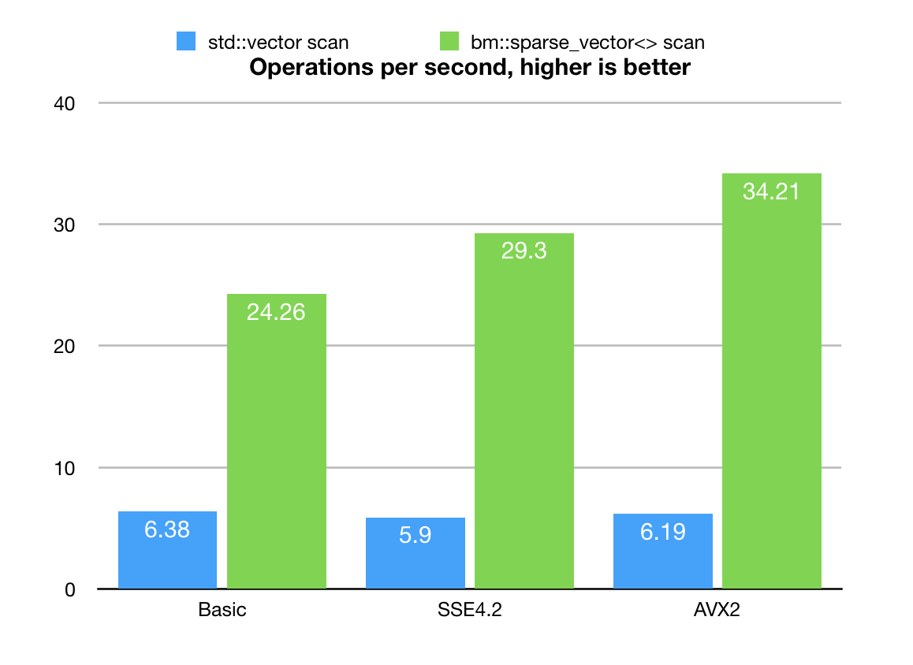

Version 3.13.0
Aug 10, 2018Release Notes
- Implemented a new utility class bm::aggregator<> for fast logic (AND, OR, AND-SUB) operations on groups of vectors. Aggregator uses cache blocking techniques and other optimizations to work faster than pairwise operations.Tech.notes.
- Added new example to illustrate use of new aggregator. sample16.cpp
- Sparse vector search utility class (scanner) for unordered sets bm::sparse_vector<> bm::sparse_vector_scanner<> improved its performance 2-3x times (via use of aggregator).
- Documentation update on unordered set search, new benchmark results. Read more..
